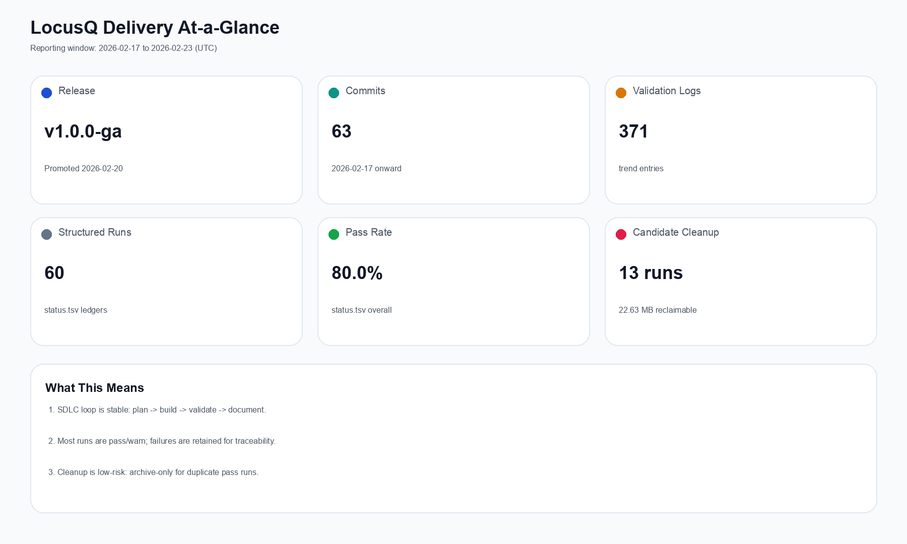

LocusQ Executive Delivery Brief
Window: 2026-02-17 to 2026-02-23 (UTC)
v1.0.0-ga
Release milestone (2026-02-20)
63
Commits
371
Validation trend entries
48 / 61
Structured run passes
15
Archived hygiene candidates
Visual Dashboard



Fresh Screenshot Evidence (Same Set Used in Markdown)
Source run: standalone_ui_smoke_20260223T015539Z | Summary: TestEvidence/standalone_ui_smoke_20260223T015539Z/summary.tsv


Plain-Language Readout
Stable Host interaction blockers are closed in manual DAW checks.
Safer Allocation-free performance closure is documented in full-system lanes.
In Validation Spatial profile expansion (BL-009/BL-018) is active with deterministic evidence.
| Area | Result | Impact |
|---|---|---|
| Host UI | UI-04/UI-06/UI-07/UI-12 pass | Reliable day-to-day host workflow |
| Performance | Allocation-free closeout | Higher confidence for real-time sessions |
| Spatial profiles | BL-009 + BL-018 lanes expanded | Broader device/layout readiness |
| CLAP | External validator all-pass rerun | Reduced format-integration risk |